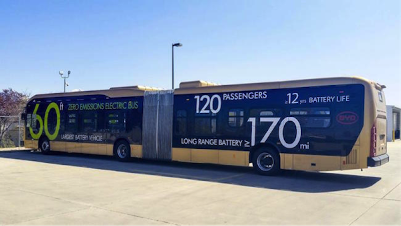
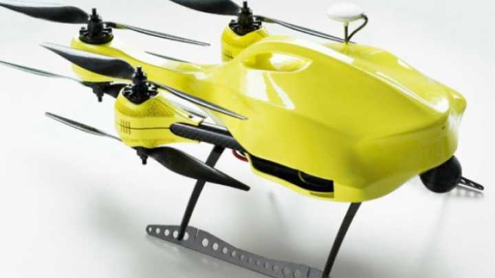
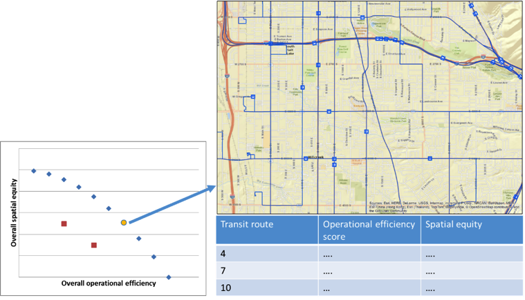
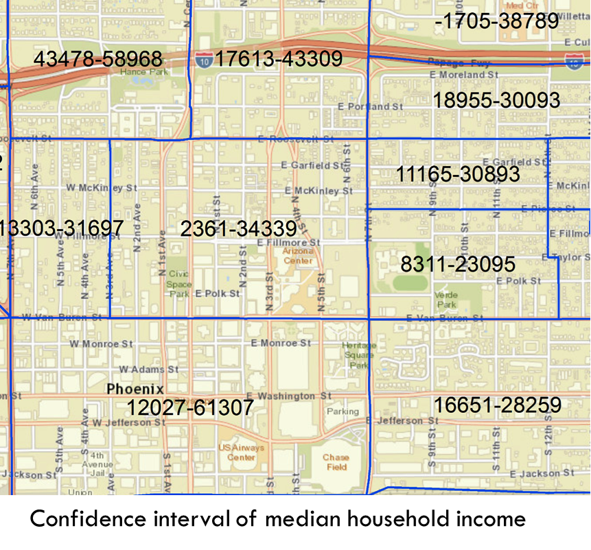

|  |
Electric bus with zero-emission has been recognized as a promising alternative to diesel and compressed natural gas (CNG) bus to advance air quality and save fuel costs. The adoption of electric buses requires significant investment and needs strategic and comprehensive planning on how to deploy electric buses and associated infrastructure (e.g., charging stations). Important decisions in deploying electric buses and charging stations will include, among others, identifying appropriate driving range (battery specification) for electric buses, allocating electric buses to appropriate transit routes, and determining locations of charging stations and their corresponding capacities that can charge the electric buses in a cost and time-effective way. This research will use and develop a combination of GIS and optimization methods to help transit agencies make informed decisions regarding strategic planning and design for electric bus systems. |
|
 |
Out-of-hospital cardiac arrest (OOHCA) is prevalent in the United States. Each year between 180,000 and 400,000 people die due to cardiac arrest. The automated external defibrillator (AED) has greatly enhanced survival rates for OOHCA. However, one of the important components of successful cardiac arrest treatment is emergency medical services (EMS) response time (i.e., the time from EMS “wheels rolling” until arrival at the OOHCA scene). Unmanned Aerial Vehicles (UAV) have regularly been used for remote sensing and aerial imagery collection but there are new opportunities to use drones for medical emergencies. The purpose of this study is to develop a geographic approach to the placement of a network of medical drones, equipped with an automated external defibrillator, designed to minimize travel time to victims of out-of-hospital cardiac arrest. Our goal was to have one drone on scene within one minute for at least 90% of demand for AED shock therapy, while minimizing implementation costs. |
|  |
Regular assessment and improvement of the performance of public transit systems are essential for transit service providers given limited funding and growing public needs. Performance evaluation can help transit agencies identify underperforming services, plan for potential investments, justify investments, and communicate accomplishments and challenges. However, the evaluation of transit system performance is complex and challenging due to the diverse and competing goals of a public transportation agency, such as improving operational efficiency, increasing service quality, and providing equitable and just transit services. This project will develop a comprehensive framework and an open-source toolbox for evaluating and enhancing the overall performance of public transit systems by using a combination of mathematical programming methods, GIS-based analysis and multi-objective spatial optimization techniques. This framework will enable operational efficiency, service quality, and access equity of transit systems to be assessed in an integrated manner, as well as identification of areas for improvement to better achieve these multi-dimensional objectives. |
|
 |
Starting from 2010, the American Community Survey (ACS) completely replaced the decennial census long form and became the primary data source for detailed characteristics of the U.S. population. The ACS data have been widely relied upon in various planning and decision making contexts due to its timely and current estimates, including resource allocation, transportation planning, poverty assessments, population and migration pattern analysis, among others. The annual ACS estimates also present great challenges to data sampling and inferences to be made based on the data. Given the limited budget and time constraints, the ACS utilizes a much smaller sample (1 in 38 households) than the decennial long form (1 in 6 households), resulting in a potentially much larger sampling error. A growing number of literature have recognized the issue and discussed the uncertainty involved, highlighting the necessity for ACS data users to understand the data quality and its implications in future analysis and inferences, lest the planning and decision-making be biased and unreliable. While data error or uncertainty in ACS estimates has been widely acknowledged, little has been done to devise methods accounting for such error or uncertainty. This project will develop a suite of advanced mathematical, spatial statistical and geovisualization methods that explicitly take into account data uncertainty in ACS estimates to accurately and precisely identify significant patterns of demographic and socioeconomic characteristics across space. Additionally, the new methods will allow researchers in many subject areas to more accurately detect the relationships between ACS estimates and variables from other data sets (such as crime or disease events). |